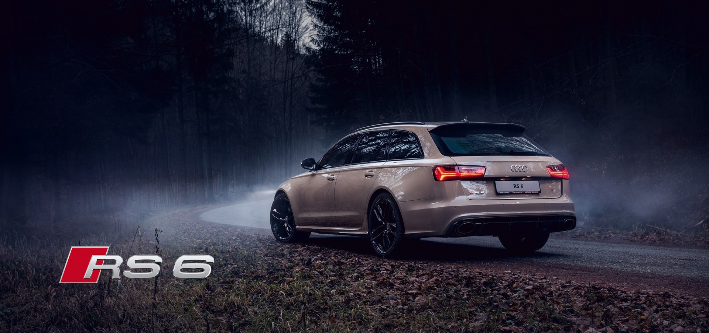

The Autobahn Cruiser
Family Wagon With 600hp

ENGINE
QUATTRO
MEASUREMENTS
- 605 HP (6800 rpm)
- 800 NM (1750 rpm)
- 4.0L TSFI Twin Turbo
- 0-100: 3.9s
- 4 Wheel Drive
- Torque Vectoring
- Offroad Capabilities
- Most Advanced on the market
- Length: 4,991 mm
- Height: 1,461 mm
- Width: 1,986 mm
- Weight: 1955 KG